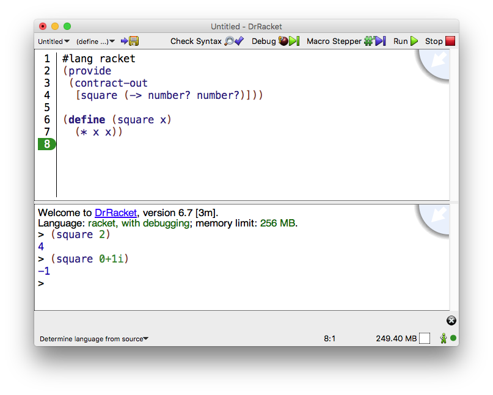

1 Interface Essentials
The DrRacket window has three parts: a row of buttons at the top, two editing panels in the middle, and a status line at the bottom.

The top editing panel, called the definitions window, is for defining programs. The above figure shows a program that defines the function square.
The bottom panel, called the interactions window, is for evaluating Racket expressions interactively. The Language line in the interactions window indicates which primitives are available in the definitions and interactions windows. In the above figure, the language is determined from the program source’s #lang line.
The interactions window is described further in The Interactions Window, later in this manual.
Clicking the Run button evaluates the program in the definitions window, making the program’s definitions available in the interactions window. Given the definition of square as in the figure above, typing (square 2) in the interactions window produces the result 4.
The blue quarter circle in the upper right corner provides access to the summary information from the documentation. The status line at the bottom of DrRacket’s window provides information about the current line and position of the editing caret, whether the current file can be modified, and whether DrRacket is currently evaluating any expression. The recycling icon flashes while DrRacket is “recycling” internal resources, such as memory.